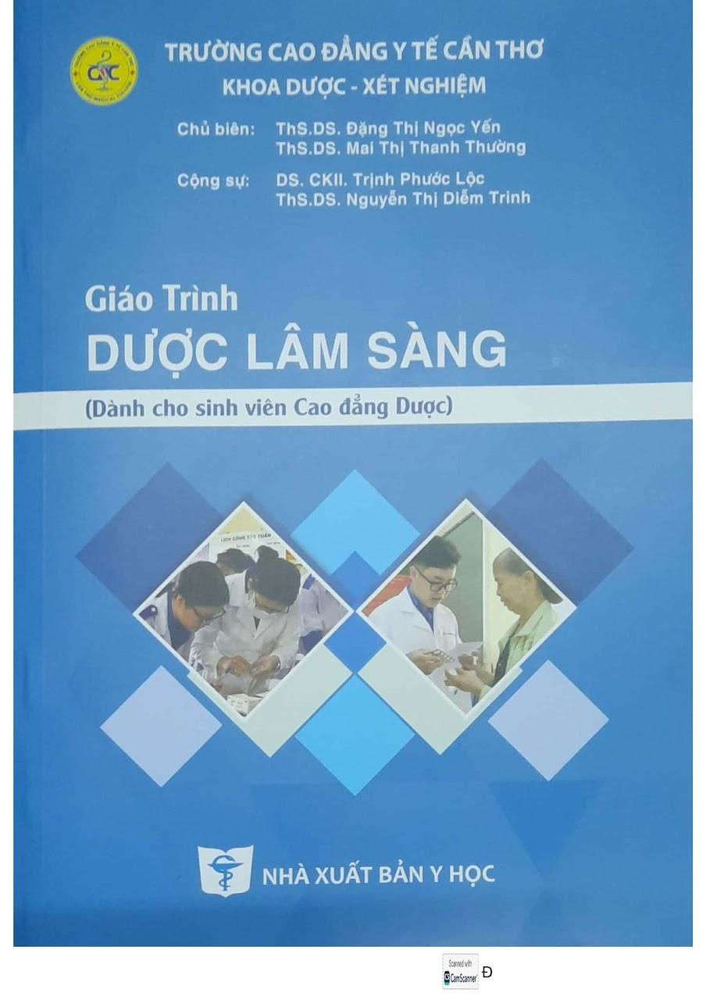
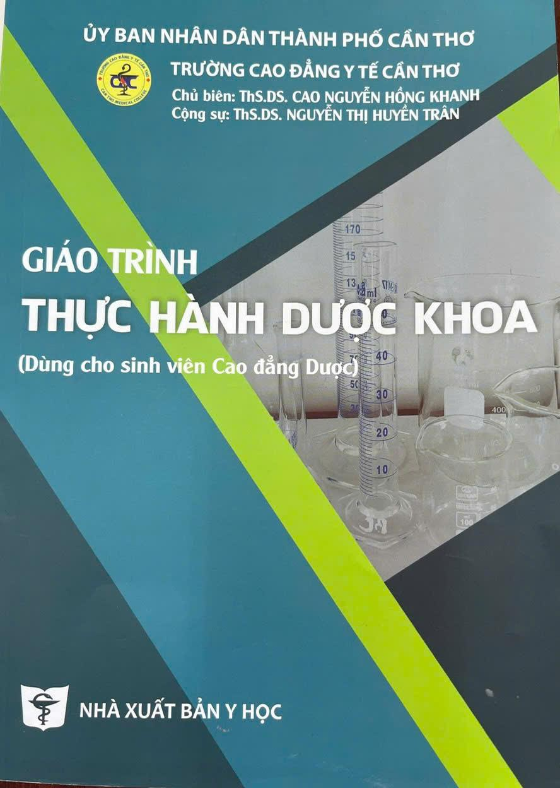
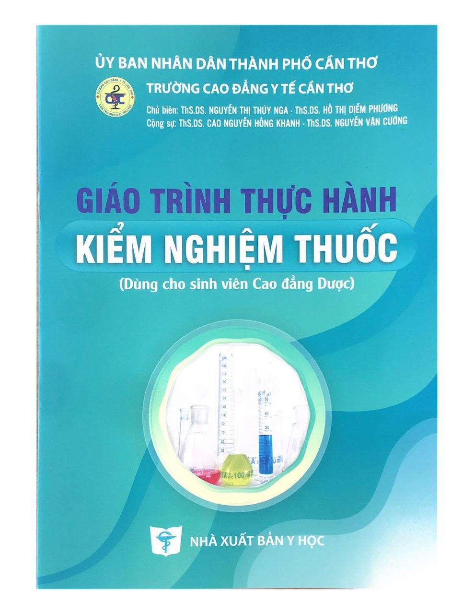
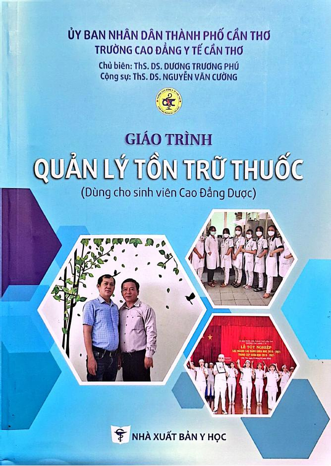
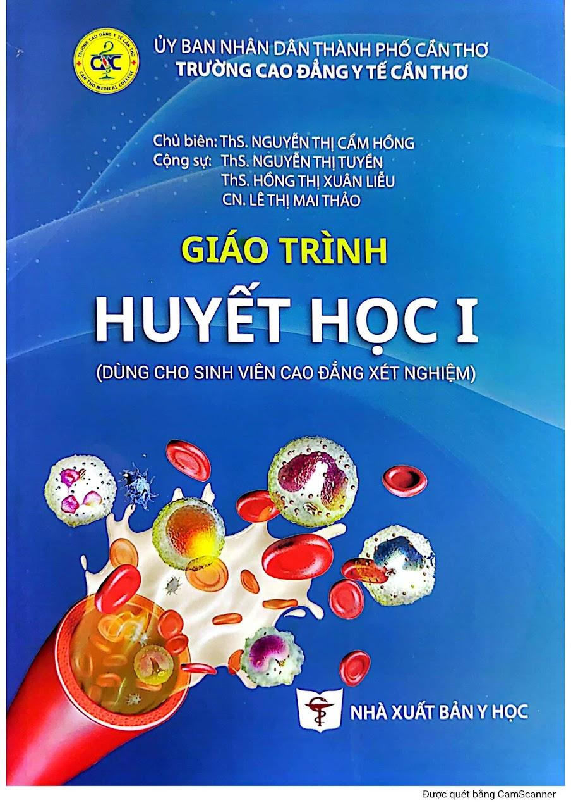
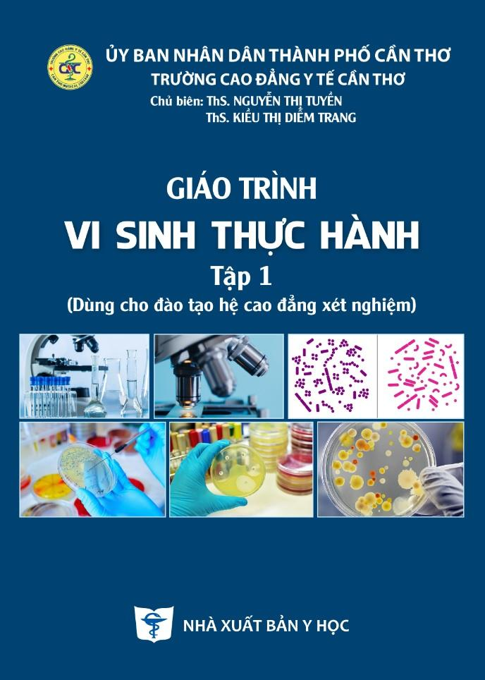

Tài liệu chuyên ngành
GIÁO TRÌNH
Danh mục giáo trình theo năm học
Giáo trình xuất bản
Hiện tại, Khoa đã xuất bản được 5 giáo trình do NXB Y học phát hành, cụ thể:
Đối với ngành Dược : 4 quyển là Giáo trình thực hành Kiểm nghiệm thuốc, Giáo trình thực hành Dược Khoa, Giáo trình Dược lâm sàng, Giáo trình Quản lý tồn trữ thuốc.
Đối với ngành Xét nghiệm: 2 quyển là Giáo trình Vi sinh Thực hành (Tập 1), Giáo trình Huyết học 1.






TÀI LIỆU THAM KHẢO
Ngành Dược
Bộ Y tế (2022), Dược thư quốc gia Việt Nam, NXB KH-KT.
Bộ Y tế (2018), Thông tư 21/2018/TT-BYT ngày 12 tháng 9 năm 2018 quy định việc đăng ký lưu hành thuốc cổ truyền - dược liệu, Hà Nội.
Hoàng Thị Kim Tiến (2011), Chăm sóc dược, NXB Y học.
Nguyễn Ngọc Khôi (2021), Dược lâm sàng và điều trị, Trường đại học Y dược TP.HCM, NXB Y học.
Giáo trình quản lý tồn trữ thuốc (2023), Khoa dược - xét nghiệm, Trường Cao đẳng Y tế cần Thơ.
Tạ Thanh Hồng, Dương Trương Phú, Nguyễn Thị Thúy Nga (2022), Giáo trình Dược liệu (dùng cho sinh viên Cao đẳng dược), Trường Cao đẳng Y tế Cần Thơ.
Bộ Y Tế (2010), Dược Điển Việt Nam IV, Nhà xuất bản Y Học Hà Nội.
Bộ Y Tế (2018), Dược Điển Việt Nam V, Nhà xuất bản Y Học Hà Nội.
Đỗ Tất Lợi (2022), Những cây thuốc và vị thuốc Việt Nam, Nhà xuất bản Y Học Hà Nội.
Bộ môn dược liệu (2022), Bài giảng Dược liệu tập I, II, Trường Đại học Dược Hà Nội, Nhà xuất bản Y Học Hà Nội.
Giáo trình Dược lý 1 (2023), Khoa Dược - Xét nghiệm, Trường Cao đẳng Y tế Cần Thơ.
Liên bộ môn Dược lý - Dược lâm sàng (2023), Dược lý 1, Trường Đại học Y Dược Cần Thơ, NXB Y học
Trần Thị Thu Hằng (2023), Dược lực học- tái bản lần 26, NXB TN.
Mai Phương Mai (2010), Dược lý học, NXB Y học.
Liên bộ môn Dược lý - Dược lâm sàng (2019), Dược lâm sàng đại cương, Trường Đại học Y Dược Cần Thơ, NXB Y Học.
Liên bộ môn Dược lý - Dược lâm sàng (2021), Dược lâm sàng và điều trị, Trường Đại học Y Dược Cần Thơ, NXB Y Học.
Bộ môn Dược lâm sàng (2021), Dược lâm sàng đại cương, Trường Đại học Y Dược Thành phố Hồ Chí Minh, NXB Y Học.
Bộ môn Dược lâm sàng (2021), Dược lâm sàng và điều trị, Trường Đại học Y Dược Thành phố Hồ Chí Minh, NXB Y Học.
Giáo trình Dược lý II (2023), Khoa Dược - Xét nghiệm, Trường Cao đẳng Y tế Cần Thơ.
Giáo trình Dược lý 2 (2023), Liên bộ môn Dược lý - Dược lâm sàng, Trường Đại học Y Dược Cần Thơ, NXB Y học.
Trần Thị Thu Hằng (2023), Dược lực học (tái bản lần 26), Nhà xuất bản Thanh Niên.
Dược lâm sàng đại cương (2019), Liên bộ môn Dược lý - Dược lâm sàng, Trường Đại học Y Dược Cần Thơ, NXB Y Học.
Dược lâm sàng và điều trị (2021), Liên bộ môn Dược lý - Dược lâm sàng, Trường Đại học Y Dược Cần Thơ, NXB Y Học.
Dược lâm sàng đại cương (2021), Bộ môn Dược lâm sàng, Trường Đại học Y Dược Thành phố Hồ Chí Minh, NXB Y Học.
Dược lâm sàng và điều trị (2021), Bộ môn Dược lâm sàng, Trường Đại học Y Dược Thành phố Hồ Chí Minh, NXB Y Học.
Bộ Y tế (2022), Dược thư Quốc gia Việt Nam, NXB Khoa học và kỹ thuật.
Bộ Y tế (2016), Hóa dược 1, NXB Y học
Bộ Y Tế (2022), Dược lý học tập 2, NXB Y học
Bộ môn Hóa dược (2023), Giáo trình Hóa Dược I, Trường Đại học Y Dược Cần Thơ.
Bộ môn Hóa dược (2022), Giáo trình Hóa Dược - Dược lý học, Trường Đại học Y Dược Vinh.
Trần Tử An (2016), Kiểm nghiệm dược phẩm, sách đào tạo dược sĩ đại học, nhà xuất bản Y học, Hà Nội.
Bộ Y Tế (2018), Thông tư 04/2018/TT-BYT ngày 09/02/2018 của Bộ trưởng Bộ Y tế quy định về thực hành tốt phòng thí nghiệm.
Bộ Y Tế (2020), Thông tư 08/2020/TT-BYT ngày 27/5/2020 của Bộ trưởng Bộ Y tế về sửa đổi, bổ sung một số điều trong Thông tư 04/2018/TT-BYT ngày 09/02/2018 quy định về thực hành tốt phòng thí nghiệm.
Võ Thị Bạch Huệ, Vĩnh Định và Cộng Sự (2008), Hóa phân tích tập II, NXB Y Học Hà Nội.
Đỗ Châu Minh Vĩnh Thọ, Nguyễn Thị Ngọc Vân, Trần Việt Hùng (2023), Giáo trình kiểm nghiệm dược phẩm, Trường Đại học Y dược Cần Thơ, Nhà xuất bản Y Học Hà Nội.
Trần Tích (2010), Kiểm nghiệm thuốc, Bộ Y Tế Vụ Khoa Học và Đào Tạo, NXB Y Học Hà Nội.
Ngành Xét nghiệm
Bộ Y tế (2022), Hướng dẫn quy trình kỹ thuật khám bệnh, chữa bệnh chuyên ngành huyết học - truyền máu - miễn dịch - di truyền - sinh học phân tử, Nhà xuất bản Y học
Đặng Thị Ngọc Dung (2023), Kỹ thuật và thiết bị xét nghiệm y học, Nhà xuất bản Y học, Hà Nội.
Đỗ Trung Phấn (2022), Kỹ thuật xét nghiệm huyết học và truyền máu ứng dụng trong lâm sàng, Nhà xuất bản Y học, Hà Nội.
Geoffrey Kellerman (2013), Sổ tay những kết quả xét nghiệm bất thường (Ấn bản Tiếng Việt), Nhà xuất bản Y học, Hà Nội.
Lê Xuân Trường (2021), Hoá sinh lâm sàng, NXB Y học, Hà Nội.
Lê Xuân Trường (2023), Những xét nghiệm hoá sinh hiện đại sử dụng trong lâm sàng, Nhà xuất bản Y học, Hà Nội.
Nguyễn Đạt Anh (2013), Các xét nghiệm thường quy áp dụng trong lâm sàng, MedBook tủ sách Y Dược, Hà Nội.
Quyết định số 320/QĐ-BYT, ngày 23 tháng 01 năm 2014, Hướng dẫn quy trình kỹ thuật chuyên ngành sinh hóa.
Quyết định số 1539/QĐ-BYT, ngày 20 tháng 04 năm 2017, Hướng dẫn thực hành kỹ thuật xét nghiệm vi sinh lâm sàng
Tống Phi Khanh (2021), Kỹ thuật xét nghiệm vi sinh y học, Nhà xuất bản Y học, Hà Nội.